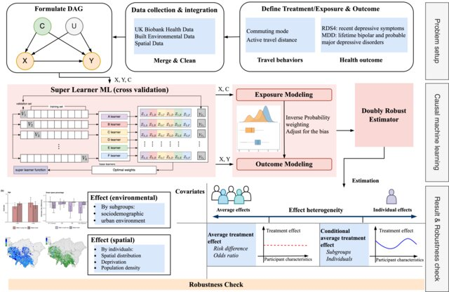

联合共建：银湾研究院、纳尼（深圳）咨询有限公司
电话：+86 13538048576地址：深圳市龙岗区龙城街道紫薇社区吉祥中路234号碧湖玫瑰园10栋303
2025年，银湾研究院核心成员李悦博士、高级研究员陈淑娟博士与剑桥大学建筑系金鹰教授合作，在交通领域国际顶级期刊《Transportation Research Part A: Policy and Practice》发表题为《英国主动通勤心理健康效益的社会与环境异质性：一项因果机器学习分析》的研究论文。该研究首次将双重稳健估计与超级学习者机器学习算法整合为因果推断框架，利用英国生物银行14.5万成年人的大规模队列数据，系统揭示了主动通勤（步行/骑行）对心理健康的保护效应在不同社会、环境与空间语境下的巨大差异，为精准化、公平导向的健康城市交通政策提供了迄今最严谨的循证依据。
我中心李悦博士与陈淑娟博士共同负责本研究的理论框架构建、因果识别策略设计及全部数据分析工作。研究突破了过去三十年该领域依赖传统关联分析或参数统计模型的范式局限，创新性地解决了两个核心方法论难题：其一，通过双重稳健估计有效纠正了主动通勤者与机动通勤者之间的非随机选择偏倚，无需因倾向性评分匹配而损失样本与统计功效；其二，借助超级学习者算法自适应学习高维环境变量与通勤行为间的非线性交互关系，首次在个体尺度上估计出每一位通勤者的异质性处理效应。
研究核心发现对全球超大城市交通与健康协同治理具有颠覆性政策含义：
第一，主动通勤的心理健康保护效应存在显著的社会梯度。研究证实，从机动通勤转向步行或骑行，可使抑郁严重度评分显著降低、抑郁风险显著下降，但这一益处在年轻成年人及女性群体中尤为强烈。这意味着，若采用“一刀切”式的主动通勤推广政策，可能无意中扩大而非缩小既有的健康不平等。研究团队据此建议，城市交通补贴与健康促进项目应优先向中年以上男性通勤者倾斜，因其从政策干预中的获益潜力目前被系统性低估。
第二，建成环境是通勤健康效益的“效果修饰剂”，其调节效应远超以往认知。研究发现，主动通勤的保护效应在绿空间覆盖率更高、距主干道更远、邻近道路密度更低的街区被显著放大。特别值得警惕的是，居住地距离最近道路的距离每增加一个标准差，主动通勤的抗抑郁效益即提升近三成。这一发现直接挑战了当前国内许多城市“沿主干道布设非机动车道”的常规做法——若不辅以有效的交通静稳化措施与绿带隔离，此类设施的健康投资回报率将大打折扣。
第三，空间异质性的可视化分析揭示了“骑行荒漠”与“步行绿洲”的并存格局。研究首次绘制了全英格兰地区主动通勤个体处理效应地理分布图，发现大伦敦等高密度城市化区域反而呈现最弱的心理健康效益，而乡村及低 deprivation 指数区域保护效应最强。这一颠覆性发现提示：拥挤、高噪音、低绿视率的城市街道环境可能正在抵消通勤体力活动本应带来的精神福祉。研究团队在讨论部分尖锐指出：“若不同步改善通勤环境质量，单纯鼓励骑行可能使通勤者暴露于更高水平的交通相关压力与空气污染之中。”
从政策转化视角，本研究为深圳及粤港澳大湾区正在推进的“绿道连通工程”“慢行交通示范区”建设提供了三组可直接嵌入决策流程的工具性产出：
其一，一套可迁移的因果机器学习评估协议。深圳已建成全球领先的公共交通刷卡与绿道流量感知系统，本研究的分析框架可直接应用于本地多源数据融合，对梅林关、布吉关等典型通勤走廊的慢行化改造开展事前健康效益模拟与事后效果评估。
其二，一组建成环境阈值建议。基于英国证据，研究建议将“通勤路径平均绿视率不低于25%”“居住地500米范围内无快速路”纳入健康社区评审标准，并应在地铁站点最后一公里接驳规划中强制开展“环境应激暴露评估”。
其三，一个空间靶向政策工具包。研究团队正在将本研究的异质性处理效应映射算法开发为标准化的GIS工具箱，可协助规划部门快速识别全市范围内“高通勤流量—低环境品质—高脆弱人群”三重叠加的政策干预优先区。
本研究是银湾研究院“建成环境与心理健康”旗舰研究方向的里程碑式成果。目前，李悦博士、陈淑娟博士联合团队已依托本研究的方法学基础，成功申请到UK Biobank“中国健康城市纵向队列”专项数据使用权，正在开展深圳、香港、广州三地通勤行为与心理健康的跨文化比较研究。我们诚挚欢迎国内各城市卫生健康委员会、交通运输局、城市规划设计研究院及关注健康公平的公益基金会，就因果机器学习方法培训、通勤健康效益评估、慢行环境微更新效果追踪等方向开展联合研究与政策试验。
如您对本研究的因果推断框架、政策转化工具或定制化城市分析服务感兴趣，欢迎与我们联系：contact@greybay.org。
论文信息：
Social and environmental disparities in mental health benefits from active transport in the UK: a causal machine learning analysis. Shujuan Chen, Yue Li, Ying Jin. Transportation Research Part A: Policy and Practice, 2025, 104809.
DOI: 10.1016/j.tra.2025.104809
原文链接：https://doi.org/10.1016/j.tra.2025.104809 (付费订阅)
